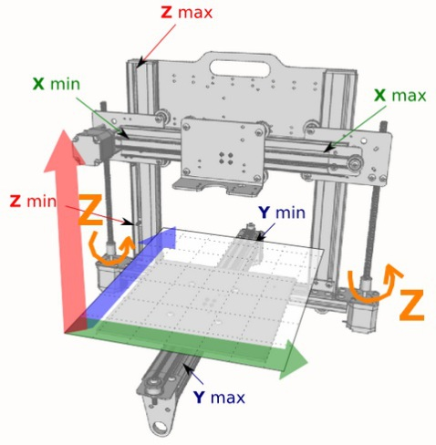
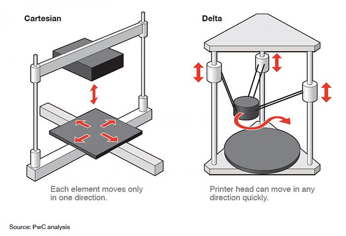
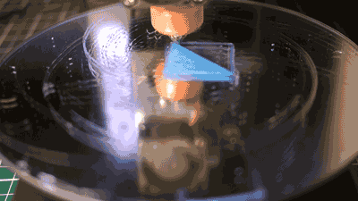

Máy in và phần mềm in 3D
Nguyên lý hoạt động: Một đối tượng được tạo thành bằng phần mềm thiết kế hỗ trợ máy tính (CAD). Đối tượng được xuất ở định dạng tệp có chứa Ngôn ngữ chuẩn Tessellation(STL) để xác định đối tượng 3D có bề mặt và đỉnh tam giác (được gọi là tệp .stl).Tệp .stl kết quả được chia hoặc cắt thành các lớp và tệp chạy máy được tạo (gọi là tệp .gcode) bằng .Tệp này chứa các path để kiểm soát các trục, hướng di chuyển, nhiệt độ của đầu đùn, .... Ngoài ra, mỗi lớp được xây dựng như một bản đồ của các đường di chuyển (đường dẫn cho sợi nhựa ép đùn) để điền vào phác thảo đối tượng và bên trong.1.Máy in
Máy in 3D đang ngày càng phát triển và chứng tỏ được sự hữu ích trong ngành công nghiệp cũng như đời sống thường ngày. Và để tận dụng được tối đa khả năng của máy in, bạn phải nắm rõ những đặc điểm cũng như ưu – nhược điểm của từng loại máy.
Nếu phân loại theo kết cấu chuyển động thì hiện nay phổ biến với 3 loại máy in 3D: Cartesian, Delta, và Polar.
Cartesian
Là các máy in 3D di chuyển đầu đùn nhựa nhờ các chuyển động theo phương X, Y, Z trong hệ tọa độ Cartesian. Đại diện tiêu biểu dòng máy in 3D mã nguồn mở loại Cartesian chính là Prusa i3 hay Mendel.
Ưu điểm:
- Lắp ráp, căn chỉnh và bảo dưỡng dễ dàng
- Cộng đồng mã nguồn mờ lớn
- Phù hợp với người mới bắt đầu làm quen công nghệ in 3D
Nhược điểm:
- Khối lượng các cơ cấu đi động lớn, nên tốc độ in không cao và gây ồn
- Khi hoạt động máy thường bị rung và do vậy làm giảm độ chính xác
- Kích thước ngang lớn, thường bị hạn chế chiều cao vật in
Delta
Là các máy in 3D di chuyển đầu đùn nhựa theo nguyên lý của robot delta (robot song song). Đại diện tiêu biểu cho dòng máy in mã nguồn mở dạng Delta là Delta robot 3D printer (Kossel).
Ưu điểm:
- Khối lượng các cơ cấu di động nhỏ và một phần di chuyển theo các trục thẳng đứng/li>
- Hoạt động êm, ít rung, tốc độ cao và chính xác
- Có thể in được vật in có chiều cao lớn
- Bàn nhiệt (nơi đặt vật in) không di chuyển trong suốt quá trình in nên vật in được giữ chắc chắn hơn
- Khung bệ chắc chắn
Nhược điểm:
- Lắp ráp, căn chỉnh máy hơi phức tạp (tuy nhiên khi đã thạo rồi thì rất dễ)
- Chiều cao của máy lớn (thường tới 60-70 cm)
- Thường đắt hơn một chút so với máy dạng Cartesian
Polar
Loại máy in 3D này mới và ít phổ biến hơn hai loại trên. Đầu đùn nhựa di chuyển theo nguyên lý của tọa độ cực.
Ưu điểm
- Kiểu dáng mới
- Máy hoạt động ít bị rung lắc như kiểu Cartesian
Nhược điểm
- Kích thước vật in có thể lớn
- Momen quán tính của bàn nhiệt lớn
- Tốc độ in không cao
- Lắp ráp và căn chỉnh máy khó
- Giá thành cao
2.Phần mềm
a) Phần mềm giao tiếp với máy in
Để giao tiếp với các máy in 3D cần phải thông qua phần mềm hỗ trợ. Đây là công cụ cho phép người dùng thông qua tương tác đồ họa để thiết lập các thông số: vị trí, tốc độ in, nhiệt độ, thời gian, mật độ,… Tất cả những thông số này sẽ quyết định đến chất lượng sản phẩm, thời gian thực hiện quá trình in 3D.
Sau một loạt tất cả những thiết lập người dùng có thể tạo ra code để nạp trực tiếp vào máy in 3D. Sản phẩm được tạo ra sẽ phản ánh tất cả những gì người dùng thiết lập trên phần mềm
b) Phần mềm thiết kế ra mô hình 3D
Hầu như tất cả các phần mềm thiết kế mô hình 3D dùng trong cơ khí hoàn toàn đáp ứng được công việc này, chỉ cần có thể xuất ra file STL là có thể sử dụng được. Ví dụ: SolidWork, Inventor, NX, SketchUp,…
Có rất nhiều các phần mềm hiện đang được sử dụng, bao gồm cả trả phí và miễn phí. Chúng tôi sẽ liệt kê ra tất cả những phần mềm hỗ trợ quá trình in 3D đồng thời đưa ra một số lời khuyên về các phần mềm nên dùng và nêu ra một số đặc điểm của chúng
| SOFTWARE | FUNCTION | LEVEL | SYSTEM | DOWNLOAD/VISIT: |
|---|---|---|---|---|
| Cura | Slicer, 3D Printer Host | Beginner | Windows, Mac, Linux | Cura |
| Matter Control 2.0 | Slicer, 3D Printer Host, Design | Beginner | Windows, Mac, Linux | MatterControl |
| 3DPrinterOS | STL Editor, STL Repair, Slicer, 3D Printer Host | Beginner | Windows, Mac, Ubuntu, Raspberry Pi | 3DPrinterOS |
| KISSlicer | Slicer | Intermediate | Windows, Mac, Linux | KISSlicer |
| Slic3r | Slicer | Intermediate | Windows, Mac, Linux | Slic3r |
| SliceCrafter | Slicer/th> | Intermediate | Browser | SliceCrafter |
| IceSL | Slicer, Design | Intermediate | Windows, Linux | IceSL |
| OctoPrint | Slicer, 3D Printer Host | Intermediate | Windows, Mac, Linux, Raspbian (as OctoPi image) | OctoPrint |
| Repetier-Host | Slicer, 3D Printer Host | Intermediate | Windows, Mac, Linux | Repetier |
| 3D-Tool Free Viewer | STL Analysis | Intermediate | Windows | 3d-Tool Viewer |
| MakePrintable | STL Editor, STL Repair | Intermediate | Browser | MakePrintable |
| Meshmixer | STL Editor, STL Repair | Intermediate | Windows, Mac | Meshmixer |
| MeshLab | STL Editor, STL Repair | Professional | Windows, Mac, Linux | MeshLab |
| Netfabb | STL Repair, Slicer | Professional | Windows | Netfabb |
| SketchUp Free | Design | Intermediate | Browser | SketchUp |
| FreeCAD | Design | Intermediate | Windows, Mac, Linux | FreeCAD |
| Blender | Design | Professional | Windows, Mac, Linux | Blender |
| OnShape | Design | Professional | Browser | OnShape |